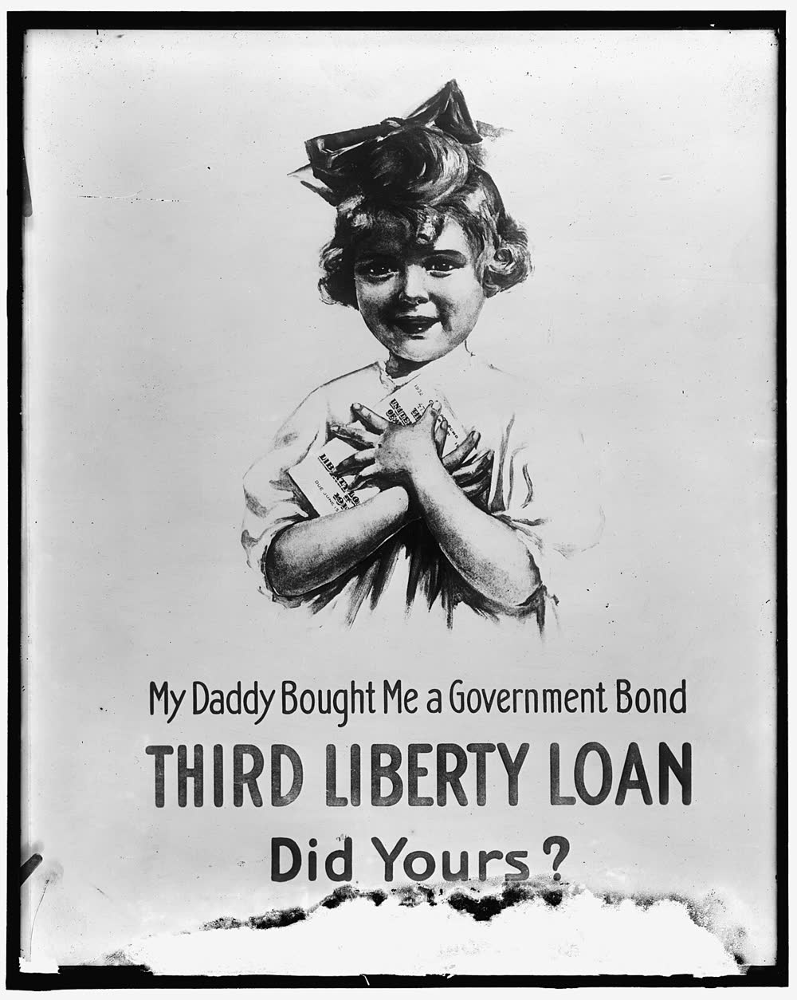

채권의 역사 — 나라와 회사가 빌린 돈의 증서The History of Bonds — IOUs of Countries and Companies
- 채권은 나라나 회사가 돈을 빌리며 써 준 차용증입니다.A bond is an IOU written by a country or company when it borrows money.
- 정해진 이자를 주기 때문에, 시장 금리가 오르면 옛 채권의 값은 내려갑니다(반대 관계).Because it pays fixed interest, when market rates rise, old bond prices fall (opposite relationship).
- 채권의 역사는 곧 나라 살림과 전쟁, 금리의 역사입니다.The history of bonds is the history of state finances, wars and interest rates.
주식이 회사의 "주인 몫"이라면, 채권은 회사나 나라에 돈을 "빌려준 증서"입니다. 주식보다 덜 알려져 있지만, 세계 채권시장은 주식시장만큼 크거나 더 큰 것으로 알려져 있습니다. 금리 뉴스를 이해하려면 채권을 꼭 알아야 합니다.If a stock is an "owner's share" of a company, a bond is a certificate for money lent to a company or a country. Bonds are less famous, but the world bond market is as large as or larger than the stock market. To understand interest-rate news, you need to know bonds.
1. 채권이란 무엇인가 — 차용증
1. What is a bond? — an IOU제가 친구에게 100만 원을 빌려주며 "1년 뒤 105만 원 갚기"라는 증서를 받았다고 해 봅시다. 이 증서가 바로 채권입니다. 100만 원은 원금, 5만 원은 이자(쿠폰), 1년 뒤는 만기입니다. 나라가 발행하면 국채, 회사가 발행하면 회사채, 지방자치단체가 발행하면 지방채라고 부릅니다. 채권은 만기 전에 다른 사람에게 팔 수도 있어서 시장에서 매일 값이 매겨집니다.Suppose I lend a friend 1 million won and get a note saying "repay 1.05 million won in one year." That note is a bond. The 1 million is the principal, 50,000 won is the interest (coupon), and one year is the maturity. A government bond is issued by a country, a corporate bond by a company. Bonds can be sold before maturity, so their prices change every day.
2. 왜 금리가 오르면 채권 값이 내려갈까
2. Why do bond prices fall when rates rise?제가 가진 채권은 1년에 5%를 줍니다. 그런데 갑자기 시장 금리가 7%로 오르면, 새로 나오는 채권은 7%를 줍니다. 누가 5%짜리 제 채권을 같은 값에 사려 할까요? 아무도 없습니다. 그래서 제 채권은 값을 깎아야 팔립니다. 반대로 금리가 3%로 내리면 제 5%짜리 채권은 인기가 올라 비싸게 팔립니다. 그래서 금리와 채권 가격은 반대로 움직입니다. 만기가 길수록 이 흔들림이 큽니다.My bond pays 5% a year. If market rates rise to 7%, new bonds pay 7%. Nobody will buy my 5% bond at the same price, so I must sell it at a discount. If rates fall to 3%, my 5% bond becomes popular and sells at a premium. So interest rates and bond prices move in opposite directions, and longer bonds swing more.
3. 중세 베네치아와 영국의 콘솔
3. Medieval Venice and British consols12세기 무렵 이탈리아 베네치아는 전쟁 비용을 마련하려고 시민에게 돈을 빌리고 이자를 주었는데, 이 증서가 사고팔리며 초기 국채 시장이 생겼다고 알려져 있습니다. 1694년 영국의 잉글랜드은행은 정부에 돈을 빌려주기 위해 세워졌고, 1751년에는 만기 없이 이자만 계속 주는 콘솔(Consols) 채권이 나왔습니다. 영국은 이렇게 싼 이자로 돈을 빌릴 수 있었던 덕분에 큰 전쟁을 치르고 해양 강국이 될 수 있었다는 평가를 받습니다.Around the 12th century, Venice borrowed from citizens to pay for wars and paid interest; these notes were traded, forming an early bond market. The Bank of England was founded in 1694 to lend to the government, and in 1751 consols appeared, paying interest forever with no maturity. Cheap borrowing helped Britain fight wars and become a sea power.
4. 미국의 자유공채 — 국민이 산 채권
4. US Liberty Bonds — bonds bought by citizens1917~1918년 제1차 세계대전 때 미국은 자유공채(Liberty Bond)를 발행해 전쟁 비용을 모았습니다. 포스터, 영화배우, 거리 행사까지 동원해 평범한 시민들도 채권을 사게 했습니다. 많은 사람이 처음으로 "채권 투자"를 경험한 계기가 되었습니다.In 1917–1918, during World War I, the US sold Liberty Bonds to fund the war, using posters, movie stars and street events. Many ordinary people invested in bonds for the first time.

5. 1980년대 고금리와 채권의 긴 상승장
5. High rates in the 1980s and a long bond rally1970년대 물가가 크게 오르자 미국 중앙은행(연준) 볼커 의장은 기준금리를 크게 올렸습니다. 1981년 무렵 미국 10년 국채 금리는 15%를 넘었습니다. 이때 산 채권은 그 뒤 약 40년 동안 금리가 내려가면서 이자도 받고 값도 오르는 행운을 누렸습니다. 2020년 코로나 때 미국 10년 국채 금리는 1% 아래로 떨어졌습니다.When prices soared in the 1970s, Fed chair Paul Volcker raised rates sharply. Around 1981 the US 10-year yield topped 15%. Bonds bought then enjoyed about 40 years of falling rates, earning interest and rising in price. In 2020, the 10-year yield fell below 1%.
6. 2022년 채권 급락 — 안전자산도 흔들린다
6. The 2022 bond crash — even safe assets shake2022년 물가가 치솟자 중앙은행들이 금리를 빠르게 올렸고, 채권 값은 역사적으로 크게 떨어졌습니다. 주식과 채권이 함께 떨어져 "채권은 늘 안전하다"는 믿음이 흔들렸습니다. 채권도 금리 변화에 따라 값이 크게 움직일 수 있다는 것을 기억해야 합니다.When inflation jumped in 2022, central banks raised rates fast, and bond prices fell historically. Stocks and bonds fell together, shaking the belief that bonds are always safe.
7. 신용등급과 위험
7. Credit ratings and risk돈을 갚을 능력이 좋은 곳일수록 이자가 낮고, 불안한 곳일수록 이자가 높습니다. 신용평가회사가 AAA, AA, A, BBB 같은 등급을 매기고, BBB보다 낮으면 '투기등급(하이일드)'이라고 부릅니다. 이자가 높다고 무조건 좋은 것이 아니라, 그만큼 못 받을 위험이 크다는 뜻입니다.Borrowers who can repay well pay lower interest; riskier ones pay more. Rating agencies give grades like AAA, AA, A and BBB; below BBB is "junk" or high yield. High interest is not always good; it means a bigger risk of not being paid.
| 구분Item | 주식Stock | 채권Bond |
|---|---|---|
| 내 위치My position | 회사의 작은 주인A small owner | 돈을 빌려준 사람A lender |
| 받는 것What I get | 배당, 주가 상승Dividends, price gains | 약속된 이자, 만기에 원금Fixed interest, principal at maturity |
| 회사가 망하면If the company fails | 나중 순서(거의 못 받음)Paid last (often nothing) | 주주보다 먼저 받을 권리Paid before shareholders |
| 흔들림Price swings | 큼Large | 보통 작지만 금리 따라 변함Usually small, but change with rates |
8. 조율사의 비유
8. A tuner's analogy채권은 정해진 박자로 꾸준히 울리는 메트로놈 같습니다. 화려하지는 않지만 일정한 이자 박자를 줍니다. 그러나 금리라는 템포가 바뀌면 메트로놈의 값어치도 달라집니다.A bond is like a metronome ticking at a steady beat. Not flashy, but it gives a steady beat of interest. When the tempo of interest rates changes, the metronome's value changes too.
📘 오늘의 영어 단어
📘 Today's English words| 영어 | 발음 | 뜻 |
|---|---|---|
| bond | 본드 | 채권 |
| principal | 프린서플 | 원금 |
| interest / coupon | 인터레스트 / 쿠폰 | 이자 |
| maturity | 머추리티 | 만기 |
| yield | 일드 | 수익률(금리) |
| government bond | 거번먼트 본드 | 국채 |
| corporate bond | 코퍼릿 본드 | 회사채 |
| credit rating | 크레딧 레이팅 | 신용등급 |
| default | 디폴트 | 채무 불이행(부도) |
| high yield | 하이 일드 | 고수익·고위험 채권 |
쉬운 예문
- When interest rates rise, bond prices fall.
금리가 오르면 채권 가격은 내려갑니다. - The bond pays a fixed coupon every year.
그 채권은 매년 정해진 이자를 줍니다. - Check the credit rating before you buy.
사기 전에 신용등급을 확인하세요.
🔊 버튼을 누르면 브라우저에 들어 있는 음성으로 영어를 읽어 줍니다(기기에 따라 안 될 수 있어요).
자주 묻는 질문
Frequently asked questions채권은 원금이 보장되나요?Is the principal of a bond guaranteed?
만기까지 갖고 있고 발행한 곳이 망하지 않으면 원금과 이자를 받습니다. 하지만 중간에 팔면 금리에 따라 손해를 볼 수 있고, 발행한 곳이 부도나면 돈을 잃을 수 있습니다.If you hold it to maturity and the issuer does not fail, you get principal and interest. But you can lose money selling early when rates change, or if the issuer defaults.
국채 금리가 오르면 왜 뉴스가 되나요?Why are government bond yields in the news?
국채 금리는 대출 금리, 회사의 자금 비용, 주식의 가치 계산에 모두 영향을 줍니다. 그래서 경제 전체의 체온계처럼 여겨집니다.They affect loan rates, company funding costs and how stocks are valued, so they work like a thermometer for the whole economy.
채권 투자는 어떻게 하나요?How can I invest in bonds?
증권사 앱에서 개별 채권을 사거나, 여러 채권을 묶은 채권 ETF·펀드를 살 수 있습니다. 처음에는 만기와 신용등급부터 확인하는 습관을 들이세요.You can buy individual bonds through a brokerage app, or bond ETFs and funds. Start by checking maturity and credit rating.
※ 이 글은 투자 권유가 아닌 공부 자료입니다.※ This page is study material, not investment advice. 숫자와 연도는 널리 알려진 역사 자료를 바탕으로 쉽게 정리했으며, 실제 투자 판단은 본인 책임입니다. 사진 출처: Liberty Bond Poster LOC hec.13894.jpg (퍼블릭 도메인 (미국 의회도서관)). 그림과 움직이는 그림은 직접 만들었습니다. · 📞 010-8756-8740